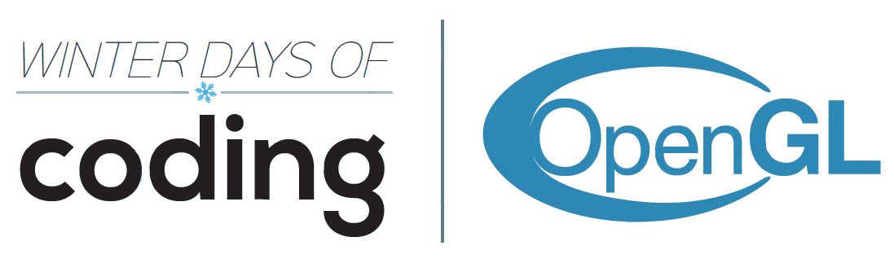
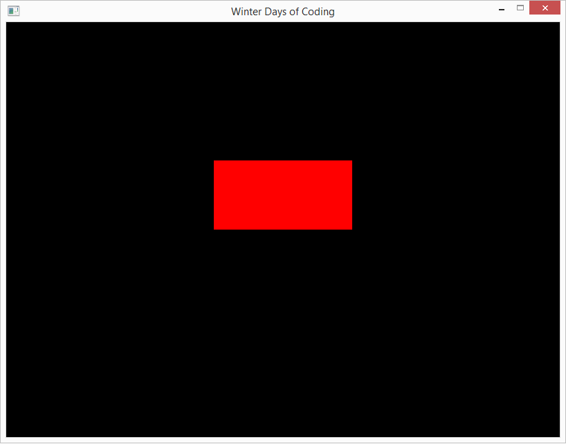

Cuprins
- Ce este OpenGL? Cum se fac jocurile?
- Pregatirea mediului de lucru
- Biblioteca CSFML
- Anatomia unui joc cu SFML / CSFML
- Jocul Arkanoid
SFML este o biblioteca open-source cu ajutorul careia se pot realiza jocuri 2D. Aceasta biblioteca expune functionalitatile de nivel jos OpenGL intr-un API (Application Programming Interface) prietenos, simplu si usor de folosit.
Numele bibliotecii, SFML, vine de la Simple and Fast Multimedia Library. Site-ul oficial este www.sfml-dev.org. Acolo puteti gasi mult mai multe informatii despre biblioteca, tutoriale, referinte si chiar si un forum unde exista o comunitate extrem de activa.
Vom folosi aceasta biblioteca deoarece este mult mai usor de folosit si de inteles decat apelurile directe puse la dispozitie de catre OpenGL. Scopul acestui tutorial este de a reprezenta o introducere rapida in OpenGL prin intermediul unui framework de nivel mai inalt.
Exista variatii ale acestei biblioteci pentru mai multe limbaje de programare, cum ar fi: C, C++, Java, Python, etc. Numele bibliotecii este adaptat in functie de limbaj:
- CSFML - pentru limbajul C
- SFML - pentru limbajul C++
- jSFML - pentru limbajul Java
- pySFML - pentru limbajul Python
- SFML.Net - pentru limbajele C#, VB.Net
Lista completa poate fi gasita aici.
3.1. Modulele bibliotecii CSFML / SFML / jSFML / etc.
Biblioteca este formată din mai multe module pe care un dezvoltator de jocuri le poate folosi în funcție de necesități. Aceste module sunt:
- System - modulul principal pe baza căruia sunt construite toate celelalte module. Conține funcții pentru lucrul cu vectori, matrici, șiruri de caractere și multe altele.
- Window - modulul care face posibilă crearea de ferestre cu un context grafic și colectarea input-ului de la utilizator (mouse, tastatură).
- Graphics - modulul care furnizează toate funcțiile necesare de creare de obiecte geometrice pe ecran, imagini, text, culori, etc.
- Audio - modulul oferă funcții pentru încărcarea de sunete și melodii de pe HDD și redarea lor în timpul jocului.
- Network - modulul acoperă partea de rețelistică, oferindu-i dezvoltatorului funcțiile necesare pentru a realiza un joc multi-player, în rețea.
Nu suntem obligați să folosim toate modulele dacă nu vrem. Este suficient ca în proiectul nostru să le încludem doar pe cele pe care le folosim. Pentru a putea accesa funcțiile oferite de un modul este necesar să încludem fișierul cu antetul fiecărei funcții implementate de modul (fișier .h).
De exemplu, dacă dorim doar să creăm o fereastră și să desenăm un pătrat va trebui să încludem următoarele:
#include <SFML/Window.h>
#include <SFML/Graphics.h>
Dacă ne dorim să atașăm și efecte sonore jocului, e necesar să includem și definițiile din modulul aferent (SFML/Audio.h).
3.2. Modulul Graphics
Acest modul ne pune la dispozitie o serie de structuri ce reprezintă diferite obiecte geometrice (dreptunghi, cerc) și funcții de creare, de modificare a poziției pe ecran, de modificare a culorii, etc.
Până acum o mare parte din problemele rezolvate la informatica, dacă nu chiar toate, implicau ca programul să se termine după ce gasește soluția la problemă. Față de acestea, un joc nu se termina. El ruleaza în continuu și este terminat de utilizator atunci când acesta dorește să îl inchidă.
Cu alte cuvinte, un joc este un program care rulează intr-o buclă până când utilizatorul decide să iasă din ea. Toate jocurile au o bucla principală în care au loc mai multe acțiuni, cum ar fi deplasarea jucătorului pe ecran, verificare coliziuni și randare (procesul de desenare pe ecran).
int main()
{
/* ... initializare resurse ...*/
while(1)
{
/* Bucla principala a jocului. */
if(user_wants_to_exit)
break;
}
/* ... eliberare resurse ... */
return 0;
}
4.1. Fereastra principală
Ne dorim să realizăm un joc grafic, nu un joc în consolă. Pentru acest lucru avem nevoie să cerem sistemului de operare să creeze o astfel de fereastră pentru noi. Biblioteca CSFML ne pune la dispoziție o funcție ce îi cere mai departe sistemului de operare să creeze o fereastră cu un nume dat și o anumita dimensiune pentru noi.
#include <stdio.h>
#include <math.h>
#include <SFML/Graphics.h>
#include <SFML/Audio.h>
#define EXIT_FAILURE -1
#define EXIT_SUCCESS 0
int main()
{
/* Initializare structura cu dimensiunile fereastre. */
sfVideoMode videoMode = {
.width = 800, /* Latimea ferestrei, in pixeli. */
.height = 600, /* Inaltimea ferestrei, in pixeli. */
.bitsPerPixel = 32 /* Cantitatea de informatie a ficarui pixel. */
};
/* Crearea efectiva a ferestrei de desenare, cu dimensiunile specificate anterior. */
sfRenderWindow *window = sfRenderWindow_create(
videoMode, /* Structura cu dimensiunile. */
"Winter Days of Coding", /* Titlul ferestrei. */
sfClose, /* Fereastra sa aiba buton de inchidere. */
NULL /* Optional: structura cu nivelul de detalii grafice. */
);
while(1)
{
/* Bucla principala a jocului. */
}
/* ... eliberare resurse ... */
return 0;
}
4.2 Desenare dreptunghi
Un dreptunghi in CSFML este descris de structura sfRectangleShape. Această structură reține informații despre poziția pe ecran a obiectului, despre dimensiunea și culoarea.
Toate funcțiile care modifică parametrii unei structuri de dreptunghi au prefixul sfRectangleShape_. Exemple de funcții aplicabile peste un dreptunghi:
-
sfRectangleShape_create()
Aceasta funcție nu primește niciun parametru. Ea aloca memorie pentru un dreptunghi și returnează un pointer către zona de memorie alocată.
-
sfRectangleShape_destroy(sfRectangleShape *shape)
Aceasta funcție primește ca paremetru un pointer la o structură sfRectangleShape și eliberează zona de memorie ocupată de aceasta.
-
sfRectangleShape_setPosition(sfRectangleShape *shape, sfVector2f position)
Aceasta funcție primește ca paremetru un pointer la o structură sfRectangleShape și un vector cu două componente (x și y) ce reprezintă coordonatele în pixeli, pe ecran, ale colțului stânga sus al dreptunghiului.
Structura sfVector2f are două componente de tipul float. Acest lucru îl putem observa din numele acesteia. Pe tot parcursul dezvoltării jocului vom lucra cu această structură. Ea este definită astfel:
struct sfVector2f
{
float x;
float y;
};
-
sfRectangleShape_setPosition(sfRectangleShape *shape, float angle)
Aceasta funcție primește ca paremetru un pointer la o structură sfRectangleShape și un număr de tip float ce reprezintă unghiul cu care să fie rotit dreptunghiul, în grade. Valoarea implicită este 0°.
-
sfRectangleShape_setScale(sfRectangleShape *shape, sfVector2f scale)
Aceasta funcție primește ca paremetru un pointer la o structură sfRectangleShape și un vector cu două componente (x și y) ce reprezintă lățimea, respectiv lungimea dreptunghiului.
-
sfRectangleShape_setFillColor(sfRectangleShape *shape, sfColor color)
Aceasta funcție primește ca paremetru un pointer la o structură sfRectangleShape și o culoare. Funcția modifică culoarea cu care este umplut dreptunghiul. O culoare în CSFML este definită ca o structură cu 4 componente: roșu (R), verde (G), albastru (B) și alfa (A). Sistemul de reprezentare a culorii se mai numește RGBA. Sistemul RGBA este o extindere a sistemului RGB, acesta aduce în plus și transparență, canalul alfa (A). O valoare de 0 a canalului alfa reprezintă un obiect complet transparent. O valoare de 255 reprezintă un obiect opac.
struct sfColor
{
/**
* O variabilă unsigned char este reprezentată pe 8 biți (1 byte).
* Valoarea minimă pe care o poate lua o astfel de variabilă
* este 0 iar cea maximă este 2^8 - 1 = 256 - 1 = 255.
*/
unsigned char r;
unsigned char g;
unsigned char b;
unsigned char a;
};
Un pixel este format din 3 sub-pixeli: unul roșu, unul verde și unul albastru. Prin modificarea intensității fiecărui sub-pixel se pot obține zeci de milioane de culori.
Acestea reprezintă doar o parte din funcțiile care pot fi aplicate peste un dreptunghi (sfRectangleShape). Toate funcțiile disponibile, împreună cu descrierierea acestora, pot fi găsite în manualul bibliotecii.
Observați numele funcțiilor, toate au prefixul sfRectagleShape_set. Pentru orice funcție care setează un parametru există și o funcție care citește acel parametru. Aceste funcții au prefixul sfRectangleShape_get. Ele returnează valoarea parametrului cerut (culoare, poziție, rotație, etc.).
Exemplu
În funcția main înainte de bucla while(1) {...} creăm o variabilă de tipul sfRectangleShape*. Observați că lucram cu un pointer la o variabilă de acest tip, nu direct cu variabila. Preferăm să lucrăm așa, deoarece astfel toate formele geometrice pe care le vom definii vor fi alocate în zona de memorie numită heap.
Simplificat, când sistemul de operare lansează în execuție un program, acesta îi alocă programului două zone de memorie: o zonă de stivă (unde sunt salvate variabilele locale ale funcțiilor, apelurile de funcții, valorile de return, etc.), și o zonă de heap (aici sunt salvate variabilele alocate dinamic). Dimensiunea stivei este mult mai mică față de dimensiunea heap-ului.
Recapitulare alocare dinamica in C
Se realizează cu funția
mallloc(). Ea primește un singur parametru ce reprezintă numărul de bytes ce trebuie alocați. De obicei, o variabilă int are 4 bytes, una double 8 bytes, una char are 1 byte. Dimensiunea acestora poate depinde de la compilator la compilator, dar și de arhitectură (32 sau 64 de biți).
Funcția
malloc returnează adresa de memorie la care a fost alocată variabila. Pentru a accesa valoarea de la acea adresă de memorie (scriere sau citire) trebuiă să dereferențiem variabila.
/* Alocare variabilă de tip int pe heap. */
int *p = (int*)malloc(sizeof(int));
/* Scriere în variabilă. Mai întâi o dereferențiem. */
*p = 100;
/* Citire din variabilă - CORECT */
int x = *p;
/* Citire din variabilă - GREȘIT */
int y = p;
/* Eliberarea zonei de memorie când variabila nu mai este folosit. */
free(p);
Recapitulare alocare dinamica in C++
Se realizează cu operatorul
new. Eliberarea memoriei se face cu
delete.
/* Alocare variabilă de tip int pe heap. */
int *p = new int;
/* Scriere în variabilă. Mai întâi o dereferențiem. */
*p = 100;
/* Citire din variabilă - CORECT */
int x = *p;
/* Citire din variabilă - GREȘIT */
int y = p;
/* Eliberarea zonei de memorie când variabila nu mai este folosit. */
delete p;
Mai jos gasiti un exemplu complet care porneste o fereastra si deseneaza un dreptunghi cu dimensiunea 200px x 100px, aflat la pozitia (300, 200), umplut cu culoarea rosu.
#include <stdio.h>
#include <math.h>
#include <SFML/Graphics.h>
#include <SFML/Audio.h>
#define EXIT_FAILURE -1
#define EXIT_SUCCESS 0
int main()
{
/* Initializare structura cu dimensiunile fereastre. */
sfVideoMode videoMode = {
.width = 800, /* Latimea ferestrei, in pixeli. */
.height = 600, /* Inaltimea ferestrei, in pixeli. */
.bitsPerPixel = 32 /* Cantitatea de informatie a ficarui pixel. */
};
/* Crearea efectiva a ferestrei de desenare, cu dimensiunile
specificate anterior. */
sfRenderWindow *window = sfRenderWindow_create(
videoMode,
"Winter Days of Coding",
sfClose,
NULL
);
if (!window)
return EXIT_FAILURE;
/* Creare dreptunghi. */
sfRectangleShape *rectangle = sfRectangleShape_create();
/* Dimensiunea dreptunghului. */
sfVector2f size = {200, 100};
sfRectangleShape_setSize(rectangle, size);
/* Pozitia dreptunghiului pe ecran. */
sfVector2f pos = { 300, 200 };
sfRectangleShape_setPosition(rectangle, pos);
/* Culoarea dreptunghiului. */
sfRectangleShape_setFillColor(rectangle, sfRed);
while (sfWindow_isOpen(window))
{
/* Bucla principala a jocului. */
sfEvent event;
while (sfRenderWindow_pollEvent(window, &event)) {
/* Tratam fiecare tip de eveniment diferit. */
/* Evenimentul de inchidere de fereastra - cand apasam pe X. */
if (event.type == sfEvtClosed)
sfRenderWindow_close(window);
if (event.type == sfEvtKeyPressed && event.key.code == sfKeyEscape)
sfRenderWindow_close(window);
}
/* Golire fereastra. Sterge toata suprafata de desenare pentru a desena din nou. */
sfRenderWindow_clear(window, sfBlack);
/* Desenare dreptunghi pe suprafata feresterei. */
sfRenderWindow_drawRectangleShape(window, rectangle, NULL);
/* Facem swap intre buffer-ul din fata (ecranul) si
buffer-ul din spate. */
sfRenderWindow_display(window);
}
/* ... eliberare resurse ... */
sfRenderWindow_destroy(window);
return 0;
}
Rezultatul obtinut arata asa:

Mai intai este creata fereastra cu dimensiunea 800px x 600px. Apoi este creat un dreptunghi care este reprezentat grafic prin intermediul structurii sfRectangleShape. Functia sfRectangleShape_create() returneaza un pointer catre locatia de memorie unde a fost alocat spatiu pentru variabila.
In continuare sunt setate proprietatile dreptunghiului. Mai exact, se seteaza dimensiunea acestuia (latime 200px, inaltime 100px), pozitia pe ecran (300, 200) si culoarea cu care este umplut (rosu).
In bucla principala am adaugat un element nou, tratarea evenimentelor de la primite de la sistemul de operare. Sunt doua evenimente pe care dorim sa le tratam, ambele ce duc la inchiderea ferestrei: primul eveniment, sfEvtClosed se refera daca a utilizatorul a dat click pe butonul X al ferestrei. Al doilea eveniment se refera daca utilizatorul a apasat tasta de escape, in cazul acesta ne dorim ca jocul sa se inchida.
Evenimentele sunt impartite pe categorii, in funcie de sursa care le-a trimis. Utilizatorul este cel care le genereaza prin intercatunea cu mouse-ul, tastatura sau joystick-ul. Structura sfEvent are un camp care specifica tipul evenimentului si un camp aditional in care se specifica sursa exacta.
Tipuri de evenimente:
- sfEvtKeyPressed - generat cand o tasta a fost apasata.
- sfEvtKeyReleased - generat cand o tasta apasata a fost eliberata.
- sfEvtMouseButtonPressed - generat cand oricare buton al mouse-ului este apasat.
- sfEvtMouseButtonReleased - generat cand un buton de pe mouse este eliberat
Lista completa cu evenimente poate fi vazuta in documentatia oficiala a bibliotecii (click - cautare sfEventType).
Dupa ce sunt tratate evenimentele, primul lucru pe care trebuie sa-l este sa stergem fereastra. Dorim sa desenam totul din nou. Daca nu golim fereastra, ce vom desena la iteratia curenta va fi suprapus peste ce era deja desenat la iteratia precedenta. Acest lucru il face cu ajutorul functiei sfRenderWindow_clear(). Functia primeste ca parametrii fereastra ce trebuie golita si o culoare cu care sa o goleasca. In cazul de fata folosim negru.
Pentru fiecare forma geometrica posibila pe care biblioteca CSFML ne-o pune la dispozitie avem cate o functie care o si deseneaza pe fereastra. Pentru cazul unui sfRectangleShape avem functia sfRenderWindow_drawRectangleShape().
De fiecare data cand desenam ceva intr-o fereastra, obiectu respectiv nu este desenat instantaneu. Orice fereastra cu un context OpenGL deschis are in spate doua buffere. La o iteratie, intr-un buffer se deseneaza iar celalalt este afisat pe ecran. Niciodată nu desenăm în buffer-ul care este legat la display. Dacă am face asta, am vedea efectiv cum se desenează pe ecran și nu ne dorim acest lucru. Ne dorim ca tot contextul să fie desenat dintr-o singură instrucțiune. După ce contextul a fost desenat complet se face swap intre cele doua buffere.

4.3. Desenare cerc
Dacă în cazul unui dreptunghi ne foloseam de funcțiile care aveau prefixul sfRectangleShape, pentru lucrul cu un cerc vom folosi funcțiile ce au prefixul sfRectangleCircle. Toate funcțiile descrise mai sus în cazul unui dreptunghi sunt valabile și pentru un cerc. Crearea, distrugerea, schimbarea culorii și a pozitiție se fac la fel.
-
sfCircleShape_create()
-
sfCircleShape_destroy(sfCircleShape *shape)
-
sfCircleShape_setPosition(sfCircleShape *shape, sfVector2f position)
-
sfCircleShape_setPosition(sfCircleShape *shape, float angle)
-
sfCircleShape_setScale(sfCircleShape *shape, float radius)
-
sfCircleShape_setFillColor(sfCircleShape *shape, sfColor color)
Pentru desenarea unui dreptunghi se procodează în același mod ca în cazul desenării unui dreptunghi. În loc să folosim structura sfRectangleShape folosim sfCircleShape. Toate funcțiile valabile pentru drepunghi sunt valabile și pentru cerc. Prefixul funcțiilor de de modificare a culorii, poziției și dimensiunii trebuie schimbat din sfRectangleShape_ în sfCircleShape_.
4.5. Deplasare obiecte pe ecran
Am enumerat mai devreme o parte din funcțiile ce pot fi folosite pentru modificarea parametrilor din structurile atașate unui dreptungh și cerc. Printre acestea aveam o funcție care ne permitea să setăm poziția obiectului prin două coordonate (x, y). Funcția se numea sfRectangleShape_setPosition() pentru dreptughi și sfCircleShape_setPosition(). Atunci când apelăm aceste funcții obiectul este mutat direct la noile coordonate. Dacă facem asta o să vedem cum obiectul este ”teleportat” în noua locație. Nu ne dorim să schimbăm poziția cu totul, ci vrem doar să îl deplasăm într-o parte sau în alta cu o anumita distanță față de poziția actuală. Pentru a face acest lucru avem funcția sfRectangleShape_move(). Ea primește ca parametrii un dreptunghi și un sfVector2f reprezentând distanța pe axa OX și OY cu care să fie deplasat.
Am văzut cum tratam evenimentele mai sus, evenimente de ieșire din aplicație, tastă apăsată, mouse deplasat, etc. Există o scurtătura în detectarea lor fără să mai întrebam sistemul de operare dacă are un eveniment pentru noi. Acest lucru îl putem face în modul următor:
if (sfKeyboard_isKeyPressed(sfKeyLeft))
{
/* Actiune care se executa cand sageanta stanga este apasata. */
}
Pentru a deplasa un obiect pe ecran atunci cand apasam sagetile sus, stanga, jos si dreapta trebuie sa facem aceste verificari in bucla principala, inainte sa facem desenarea pentru iteratia urmatoare.
float speed = 0.05f;
if (sfKeyboard_isKeyPressed(sfKeyLeft))
{
sfVector2f offset = {-speed, 0};
sfRectangleShape_move(rectangle, offset);
}
if (sfKeyboard_isKeyPressed(sfKeyRight))
{
sfVector2f offset = { speed, 0 };
sfRectangleShape_move(rectangle, offset);
}
if (sfKeyboard_isKeyPressed(sfKeyUp))
{
sfVector2f offset = { 0, -speed };
sfRectangleShape_move(rectangle, offset);
}
if (sfKeyboard_isKeyPressed(sfKeyDown))
{
sfVector2f offset = { 0, speed };
sfRectangleShape_move(rectangle, offset);
}
#include <SFML.h>
int main()
{
sfRectangleShape *s = sfRectangleShape_create();
return 0;
}